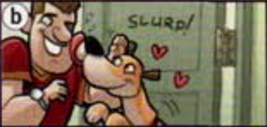

I think Trinity is serious.
friendly, funny, hard-working, kind, lazy, rude, shy, talkative
1. He's kind / unkind. He never helps people.
2. He's optimistic / pessimistic. He always thinks bad things are going to happen.
3. She's patient / impatient. She doesn't mind waiting.
4. He's funny / serious. He always tells jokes.
5. She's generous / mean. She always spends money on other people.
He's kind. He always helps people.
A: Are you kind?
B: Yes, I am. Are you confident?
A: No, I'm not. I'm shy.
generous, impatient, lazy, pessimistic, rude, shy
Martin, Julie, Terry, Emma
Tom (brother) - lazy - doesn't help around the house
My brother, Tom, is very lazy. He never does any work around the house. My sister, Susan, is...
The prefixes un-, in- (or im-) and dis- are negative. When they come before an adjective, they make its meaning opposite.
kind - unkind, patient - impatient, honest - dishonest
1. An honest person always tells the trush. A dishonest person...
2. An ambitious person tries very hard to be successful. An unambitious person...
3. A polite person is never rude. An impolite person...
4. A tidy person always puts things away. An untidy person...
5. A loyal person is your friend for a long time. A disloyal person...
6. A tolerant person listens to other people's opinions. An intolerant person...
7. An active person gets a lot of exercise. An inactive person...
8. A lucky person usually has good luck. An unlucky person...
attractive, believable, certain, comfortable, fit, grateful
1. He's very ____. He could be a model or a film star.
2. She's very ____. She can run 10 kilometres.
3. I can't sleep. This bed is very ______.
4. Thanks for the present. I'm very _____.
5. England are beating Brazil 8-0. That's _____.
6. He's definitely rich. I'm _____.